Portfolio Volatility 1
The concepts of whole-book volatility — a portfolio's variability IS its risk and opportunity, so a professional consciously chooses where to sit on the risk curve, runs Long/Short to lower correlation, and sets concrete vol/leverage/return/Sharpe targets by instrument
A portfolio is just a bunch of stocks long and short, and its variability IS its volatility — therefore its Risk AND Opportunity — so like a single asset it can be high/low/medium risk and you can consciously CHOOSE the level: professionals target a level of risk and an expected return (the Sharpe ratio); retail traders 'generally don't have a clue'. Realized portfolio vol is a Distribution of Returns on the book's return series (the 1 STD / 2 STD moves ARE the realized risk); expected portfolio vol is modelled from variances, covariances and weightings (Lesson 9). We build Long/Short (not Long-Only) to make money up AND down and for diversification — pre-emptive risk management — targeting average portfolio correlation near zero (+0.3 to −0.3), because +1 (or even 0.8/0.6) just replicates Long-Only and −1 is mathematically impossible once you hold 3+ names. Position count scales with capital (8–12 → 10–14 → 12–16), and for a 15–30% underlying-vol book Anton gives three leverage tiers: US Options 3–10×/50–100%/Sharpe 3.33, ROW CFD 4×/22.5–45%/Sharpe 1.5, US L/S stock 2×/30–60%/Sharpe 2.
The gist
- A portfolio's VARIABILITY is its VOLATILITY — and therefore its Risk AND Opportunity. Like a single stock a portfolio can be high / low / medium risk, so you CHOOSE the level: higher-risk portfolios ⇒ higher expected returns (bigger upside AND downside), lower-risk ⇒ lower. Pros consciously target a level of risk and return; retail traders 'generally don't have a clue'.
- Realized portfolio volatility is measured exactly like a single asset — run a Distribution of Historical Returns on the WHOLE portfolio's return series and read the 1 STD and 2 STD moves; those % values ARE the realized (historical) risk. Expected portfolio volatility (the more important one, Lesson 9) is forecast from historical prices via variances, covariances and per-stock weightings.
- We build Long/Short, NOT Long-Only, for two reasons: (1) make money when the market goes UP and DOWN; (2) diversification = pre-emptive risk management so no single wrong position can wipe you out. Diversify enough not to be too concentrated, but not so much you can't make high returns — the risk/return trade-off theoretical finance calls the Efficient Frontier.
- Correlation drives a Long/Short book: +1 (everything moves together) is pointless — it just replicates Long-Only, and even 0.8 or 0.6 is pointless / blow-up risk if you're the wrong way; −1 is ideal in theory but mathematically impossible once you hold 3+ names. The realistic aim is average portfolio correlation NOT far from zero (+0.3 to −0.3); small positive averages are expected when the book is biased toward more longs OR more shorts.
- Two competing factors — desire for outsized Absolute Returns vs desire to control Risk — are balanced by choosing an annual risk level and targeting an annual return from it. That ratio is the Sharpe ratio; the aim is to MAXIMISE Sharpe (highest return from lowest risk), make money regardless of market direction (Absolute Return), and still always beat stock-market returns.
- Position count scales with (margin) capital, all leveraged so risk AND return are leveraged: $25k–$100k → 8–12 positions; $250k–$1M → 10–14; $2M–$5M → 12–16. Below the floor you're too concentrated; above the cap you're too diversified to hit your target vol/return.
- For a 15–30% expected annual UNDERLYING-stock vol, three instrument tiers give three risk/return profiles (all target correlation +0.3 to −0.3): US Equity Options 3–10× implicit leverage → 45–300% range, target 50–100% (Sharpe 3.33); ROW CFD 4× → 60–120% range, target 22.5–45% (Sharpe 1.5); US L/S Stock only 2× overnight → 30–60% range, target 30–60% (Sharpe 2). Options win on implied leverage, risk asymmetry and higher ROI.
From single asset to the whole portfolio
- So far volatility was measured on a SINGLE asset: Realized (Historical) via Distribution of Returns and ATRP, and Implied (future) volatility.
- Now, as Traders & Long/Short Portfolio Managers, we can also calculate the volatility of our PORTFOLIOS.
- Why: to choose the level of Risk we take and the Opportunities we expose ourselves to, in order to hit the returns we're targeting.
- Professional traders consciously target certain levels of Risk and Return; retail traders do not — they 'generally don't have a clue' about the risk and opportunity they carry.
A portfolio is just a collection of assets — a bunch of stocks, long and short — so everything learned about single-asset volatility carries over. The whole point of moving up to the portfolio level is to stop going into the market blind.
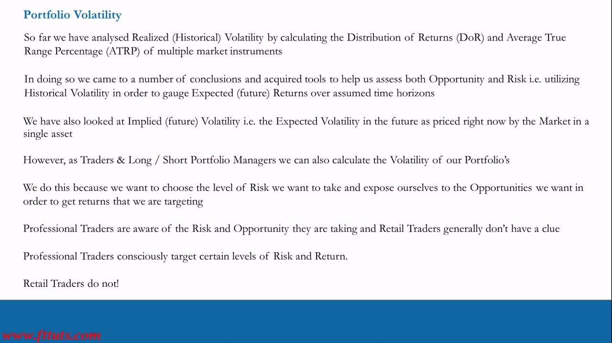
A portfolio has volatility — so you can choose its risk
- The variability in your portfolio IS the volatility of your portfolio — and therefore its Risk and Opportunity.
- Like a single stock, portfolios can be high / low / medium risk; you can consciously CHOOSE the level of risk you want, the same way you choose it in a single asset.
- Higher-risk portfolios ⇒ higher Expected Returns; lower-risk portfolios ⇒ lower Expected Returns — because the upside (and downside) is greater in risky portfolios.
- It seems obvious, but it isn't obvious to retail traders — they don't build professional Long/Short portfolios and don't know how to calculate risk and expected return properly.
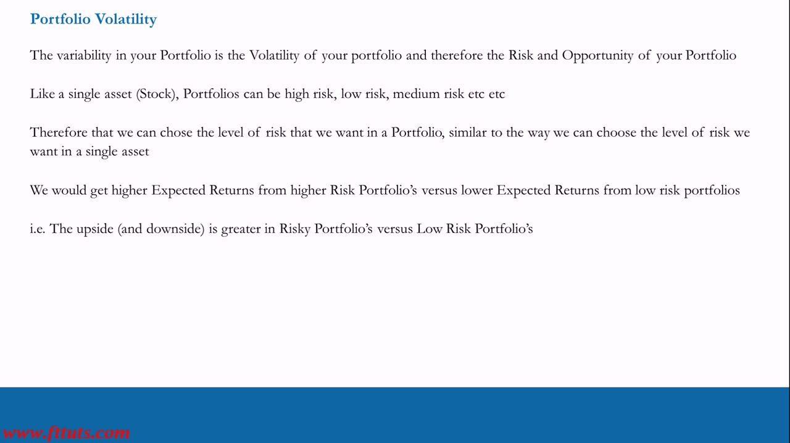
Why Long/Short, not Long-Only (Efficient Frontier)
- We build Long/Short portfolios, NOT Long-Only. Two main reasons: (1) make money when the market goes UP and when it goes DOWN; (2) diversification — i.e. pre-emptive Risk Management.
- Diversification principle: when you're wrong on a position (which happens frequently over a career), no single position can wipe you out.
- Diversify enough not to be stupid (too concentrated / too much risk), but NOT so diverse you can't make high returns — target a chosen level of risk.
- This risk/return trade-off is what theoretical finance calls the Efficient Frontier: diverse enough that one bad position can't blow you up or cause a big drawdown, but not so diverse you can't make high returns.
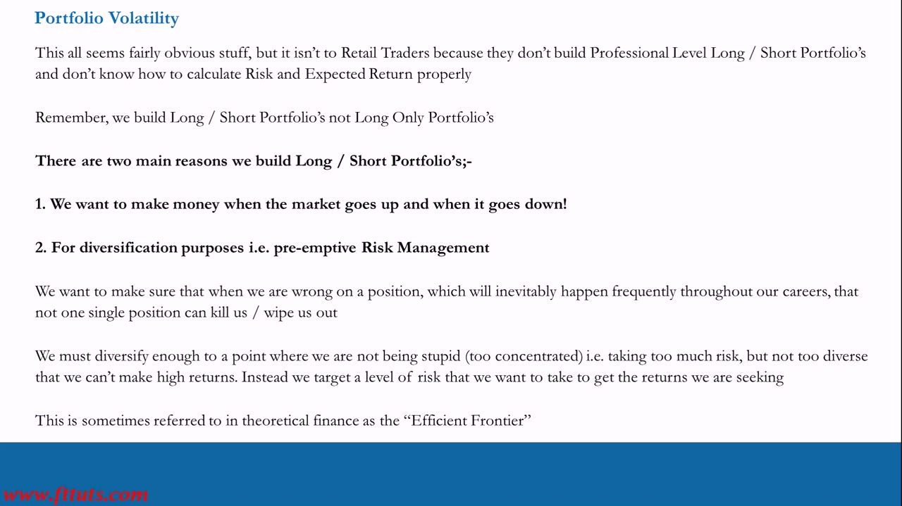
Realized vs expected portfolio volatility
- Realized Portfolio Volatility is computed the SAME way as for a single asset: run a Distribution of Historical Returns on the whole portfolio, then calculate the 1 STD and 2 STD moves.
- The 1 STD and 2 STD % values ARE the Realized (historical) Risk of the Portfolio — the same DoR machinery from earlier lessons, applied to the portfolio's return series.
- But the more important measure is EXPECTED portfolio volatility — the volatility we expect in the FUTURE when we model a portfolio, to understand its future risk and opportunity.
- Expected vol is forecast with statistical methods that use HISTORICAL asset prices: variances and covariances, plus a weighting applied to each stock in the portfolio.
- Covariance measures the relationship between two assets; correlation is covariance normalised to a value from +1 to −1 (expressible as +100% to −100%). Full method comes in Video 9 (Portfolio Volatility Calculator); brush up via the Video 2 Basic Statistics Guide.
Anton deliberately doesn't run realized DoR on a portfolio in this series — the goal is the forward-looking expected number, because that's what lets you MODEL and target a chosen risk/return. Lesson 9 is the spreadsheet class that computes it for real.
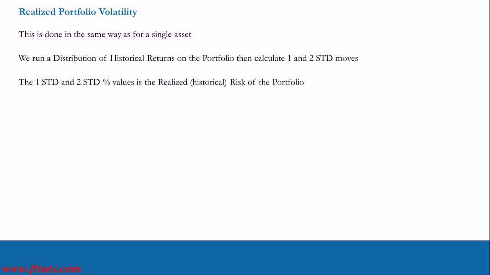
Why model portfolios — choose your spot on the risk curve
- It matters because we can model different types of portfolios — with different levels of Volatility (Risk and Opportunity) and differing Correlations.
- We can therefore choose, as Traders / PMs, WHERE we want to be on the Risk Curve — what level of risk to take and opportunity to expose ourselves to.
- We are not going into the market blind — we know the level of Risk and Expected Return we are targeting.
- In the modelled theory chart (Video 9): portfolio volatility (standard deviation) is on the vertical axis vs the NUMBER of positions on the horizontal axis — the more positions you take, the lower the portfolio standard deviation, until a point where adding more no longer lowers it.
Higher-market-cap stocks (mega/large caps) are less volatile than mid/small caps, so — as expected — Long-Only mega/large-cap books are less volatile than Long-Only mid-cap or mixed mid/large books. But we're not Long-Only; that's why correlation, not just market cap, becomes the lever.
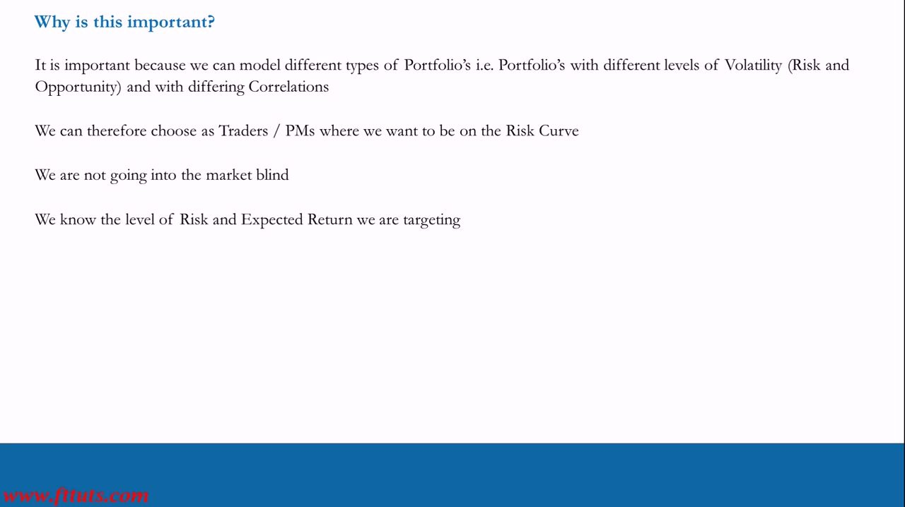
Correlation is everything in a Long/Short book
- Correlation = +1 (100%) ⇒ everything moves up/down together — pointless, it just replicates a Long-Only portfolio. Even high correlation of 0.8 or 0.6 is pointless.
- If you're the wrong way with high correlation you blow up: shorts rise more than longs (up market) or longs fall more than shorts (down market).
- Correlation = −1 ⇒ everything moves in opposite directions — in theory perfect, incredibly efficient diversification (be long the one that rises, short the one that falls) — but in reality, building a Long/Short portfolio, it's mathematically impossible.
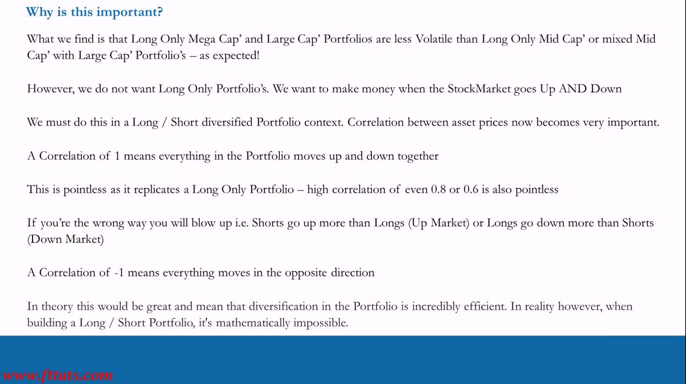
Target average portfolio correlation near zero
- Two stocks can move perfectly opposite (−1), but as soon as you have 3 stocks or more, the average correlation can no longer be −1 — mathematically it just doesn't work.
- In Long/Short portfolios the aim is average portfolio correlations NOT too far from 0 — that's the best you can do in the real world.
- Small positive average correlations should be EXPECTED in portfolios biased toward a greater number of EITHER long OR short positions (e.g. a 10-stock book of 6 longs / 4 shorts).
- We want that positive correlation not too far from zero — we don't want to be wildly positive.
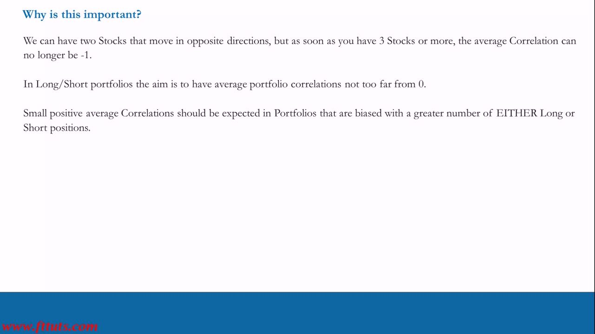
Two competing factors — maximise Sharpe
- Part of the reason we run a Long/Short mandate is that it LOWERS portfolio volatility.
- Two competing factors: (1) desire for outsized Absolute Returns; (2) desire to control Risk.
- We choose a level of Annual Risk and target an Annual Expected Return from that risk — that ratio (expected return over risk taken) is the Sharpe Ratio.
- Aim: MAXIMISE Sharpe — highest possible return from the lowest possible risk — and make money regardless of market direction (Absolute Return mandate), while still always doing way better than stock-market returns.
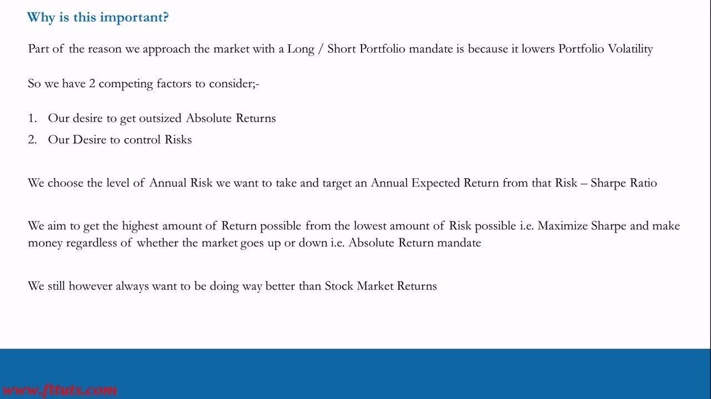
Position sizing — number of positions scales with capital
- Small margin capital ($25,000 / $50,000 / $100,000) → 8–12 positions. Below 8 = too concentrated; above 12 = too diversified.
- Larger margin capital ($250,000 / $500,000 / $1,000,000) → 10–14 positions.
- Professional-level margin capital ($2,000,000 – $5,000,000) → 12–16 positions.
- Smaller accounts stay a bit more concentrated to make meaningful money and grow quicker; larger accounts diversify slightly more so one wildly-wrong position can't blow them up (and demand more time / more trade ideas).
- Key caveat: these are MARGIN levels and will be leveraged — so the Risk AND Return modelled on these portfolios are leveraged too.
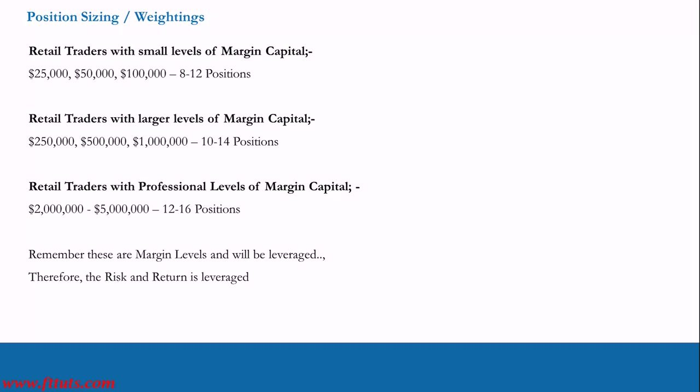
US Equity Options — 3–10× implicit leverage, Sharpe 3.33
- For a US equity options PM with $25,000–$2M margin, target 15–30% expected annual volatility — of the UNDERLYING stock portfolio, NOT the options portfolio.
- Express each idea with options instead of the stock: a long via buying calls / a call structure; a short via buying puts / a put structure. Options give IMPLICIT leverage of 3–10× the underlying stock position for the same capital.
- 3–10× implicit leverage on 15–30% underlying vol ⇒ range of possible outcomes 45–300% annual return.
- Realistic target: 50–100% annual return (can be higher) — i.e. ~3.3× the underlying portfolio volatility ⇒ Sharpe Ratio 3.33 (can be higher).
- Target Portfolio Correlation +0.3 to −0.3, expected mostly positive; all regardless of market direction — Absolute Return: 'we just want to make money'.
This is the highest-Sharpe tier, presented first. The 15–30% underlying vol is the number that pops up in the spreadsheet for the underlying stocks; options then leverage those ideas to the higher expected return.
ROW CFD portfolios — 4× leverage, Sharpe 1.5
- Rest-of-World (non-US) retail traders mostly trade CFD portfolios; same $25,000–$2M margin capital, same 15–30% expected annual volatility.
- CFDs can reach ~5× leverage but that's maxed out; a sensible approach is 4× — e.g. $25,000 → $100,000 of exposure to the 15–30% vol.
- Direct leverage of 4× ⇒ range of possible outcomes 60–120% annual return.
- Realistic target: 22.5–45% annual return (can be higher) — i.e. ~1.5× portfolio volatility ⇒ Sharpe Ratio ≈ 1.5.
- Target Portfolio Correlation +0.3 to −0.3, regardless of the equity market going up or down — 'We don't care. We just want to make money!'
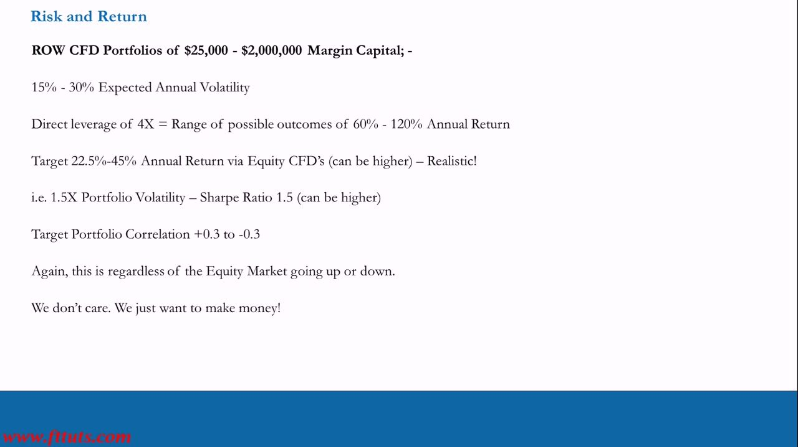
Why Options beat CFDs for the same portfolio vol
- It's harder to get a higher return from the SAME portfolio volatility with CFDs than with Options, for three reasons.
- 1. Implied Leverage — with equivalent $ margin you can expose yourself to far more contracts (much higher implied leverage) via Options than via CFDs.
- 2. Risk Asymmetry — long calls/puts have limited downside (capped at the premium paid), versus naked long stock (large downside to zero) and short stock (unlimited downside to infinity). Options also avoid the gap risk that hits CFD- or stock-only books, especially on shorts.
- 3. Higher ROI — Options structures like spreads reduce the $ volatility of positions and raise overall portfolio ROI.
- For many examples, see the POTM (Trade Structuring with Options) series — best taken alongside the PTM.
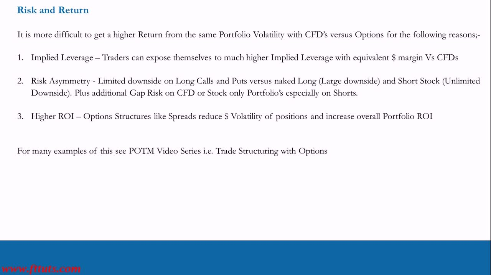
US Long/Short Stock — only 2× margin, Sharpe 2
- CFDs are banned in the US, so US Long/Short stock PMs ($25,000–$2M margin) can only get 2× overnight margin financing — vs 4× for ROW CFD.
- Same 15–30% expected annual volatility; 2× leverage ⇒ range of possible outcomes 30–60% annual return.
- Target 30–60% annual return — i.e. ~2× portfolio volatility ⇒ Sharpe Ratio ≈ 2 (can be higher). Target Portfolio Correlation +0.3 to −0.3.
- Because they get less leverage, a US retail trader running this strategy has to be a much better 'Trader' than the ROW CFD PM — achieving a HIGHER Sharpe off less leverage — trading closer to the highs and lows to match similar returns.
All three PMs (US options, ROW CFD, US stock) trade the SAME 15–30% underlying book. The differences are purely the leverage available and the resulting return/Sharpe target. The whole exercise assumes you actually have a trade-idea process producing good 20–60 day longs and shorts and that you actively trade the book — that skill is the PTM series, not the IPLT.
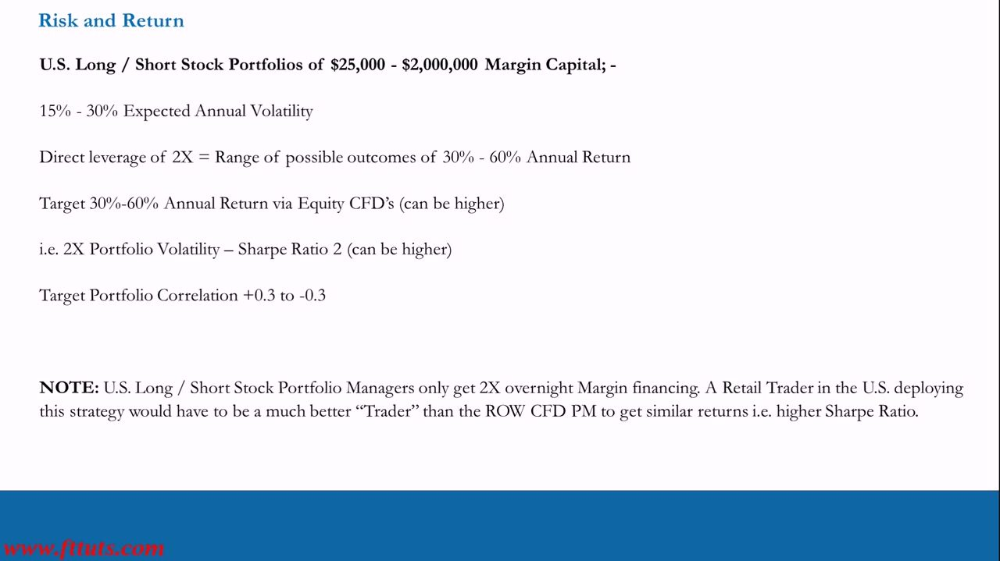
Glossary
- Portfolio volatilityThe variability of a whole portfolio's returns — its standard deviation — which IS its Risk and Opportunity. Like a single asset, a portfolio can be high/low/medium risk and you can choose the level.
- Realized portfolio volatilityHistorical portfolio risk, measured exactly like a single asset: run a Distribution of Historical Returns on the portfolio's return series; the 1 STD and 2 STD % moves ARE the realized risk.
- Expected portfolio volatilityThe FUTURE volatility of a portfolio, forecast from historical asset prices using variances, covariances and per-stock weightings (computed in the Lesson 9 spreadsheet class). The more important measure — it lets you model and target a chosen risk/return.
- CovarianceA measure of the relationship (co-movement) between two assets.
- CorrelationCovariance normalised to a value from +1 to −1 (or +100% to −100%). +1 = move together, −1 = move exactly opposite. In a L/S book, +1 (even 0.8/0.6) is pointless (replicates Long-Only, blow-up risk); −1 is impossible with 3+ names; aim for an average near zero, +0.3 to −0.3.
- Long/Short portfolioA book holding both longs and shorts. Built (not Long-Only) to (1) make money up AND down and (2) diversify — pre-emptive risk management so no single wrong position can wipe you out. Running L/S also lowers portfolio volatility.
- Efficient FrontierThe theoretical-finance name for the diversify/concentrate trade-off: diverse enough that one bad position can't blow you up, but not so diverse you can't make high returns.
- Sharpe ratioAnnual expected return ÷ annual risk taken (expected return over risk). The goal is to MAXIMISE it — highest return from lowest risk — under an Absolute Return mandate. Taught targets: ROW CFD ≈ 1.5, US L/S stock ≈ 2, US options ≈ 3.33.
- Absolute Return mandateMaking money regardless of whether the market goes up or down — 'we just want to make money' — while still always beating stock-market returns.
- Underlying portfolio volatility (15–30%)The expected annual volatility of the UNDERLYING STOCK book (not the options wrapper), the target for all three PM types. Leverage is applied on top to reach the return targets.
- Implicit / implied leverage (options)Options give exposure of 3–10× the underlying stock position for the same capital (implicit leverage), because low-priced options let you control many contracts (implied leverage) — with downside capped at the premium (risk asymmetry).
- Position sizing by capitalNumber of positions scales with margin capital (all leveraged): $25k–$100k → 8–12; $250k–$1M → 10–14; $2M–$5M → 12–16. Below the floor = too concentrated, above the cap = too diversified.